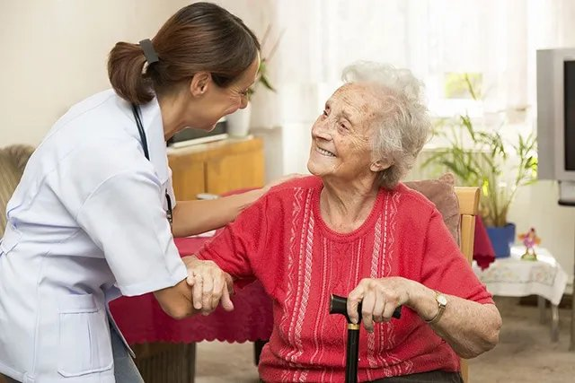

Atención domiciliaria (ATDOM)
La atención domiciliaria lleva el centro de salud a casa de quien no puede desplazarse. En Cataluña se organiza en el programa ATDOM, en el que la enfermera suele ser la profesional de referencia y la que más visitas hace.
Revisado en noviembre de 2026 · Fuentes al final de la página

Quién entra en el programa
El criterio principal es no poder ir al centro de salud por un problema de salud, de forma permanente o durante un tiempo, viva la persona en su casa o en una residencia. Los grupos más habituales son:
- Personas mayores con enfermedades crónicas, fragilidad o dependencia.
- Personas con demencia.
- Personas en situación de final de vida.
- Atención transitoria: tras un alta hospitalaria, una fractura o una cirugía, hasta que se recupera la movilidad.
La dificultad social para ir al centro (por ejemplo, no tener quien acompañe) se valora con trabajo social, pero por sí sola no es un criterio clínico de inclusión.
La valoración integral en la primera visita
Se valoran juntas cuatro dimensiones, con escalas validadas que permiten comparar en el tiempo:
| Dimensión | Qué valorar | Escalas |
|---|---|---|
| Clínica | Diagnósticos, medicación (conciliación y adherencia), dolor, constantes, piel, nutrición, eliminación | MNA-SF, Braden, dolor |
| Funcional | Actividades básicas e instrumentales, movilidad, caídas | Barthel, Lawton-Brody, Downton |
| Cognitiva y emocional | Memoria, orientación, ánimo, delirium | Pfeiffer, CAM / 4AT |
| Social y entorno | Quién cuida, sobrecarga, vivienda, barreras, ayudas | Gijón, Zarit |
El plan de cuidados
- Problemas y diagnósticos enfermeros priorizados, con objetivos pactados con la persona y la familia (ver proceso enfermero).
- Periodicidad de las visitas según la complejidad y la estabilidad, no fija para todos.
- Educación a la persona cuidadora: movilización, cambios posturales, alimentación, medicación y signos de alarma.
- Revisión de la valoración al menos una vez al año y siempre que haya un cambio importante (ingreso, caída, empeoramiento).
- Coordinación con medicina de familia, trabajo social, el PADES y la farmacia (ver gestión de casos).
Criterios de alta del programa
Recuperar la capacidad de ir al centro, el ingreso definitivo en un recurso con su propia atención sanitaria, el cambio de domicilio o el fallecimiento.
Fuentes
- Institut Català de la Salut. Programa de millora de l'atenció al domicili des de l'atenció primària de salut. Barcelona: ICS; 2010. ics.gencat.cat
- Ministerio de Sanidad, Servicios Sociales e Igualdad. Estrategia para el Abordaje de la Cronicidad en el Sistema Nacional de Salud. Madrid; 2012. www.sanidad.gob.es
- Ministerio de Sanidad, Consumo y Bienestar Social. Marco Estratégico para la Atención Primaria y Comunitaria. Resolución de 26 de abril de 2019, BOE de 7 de mayo de 2019. www.boe.es